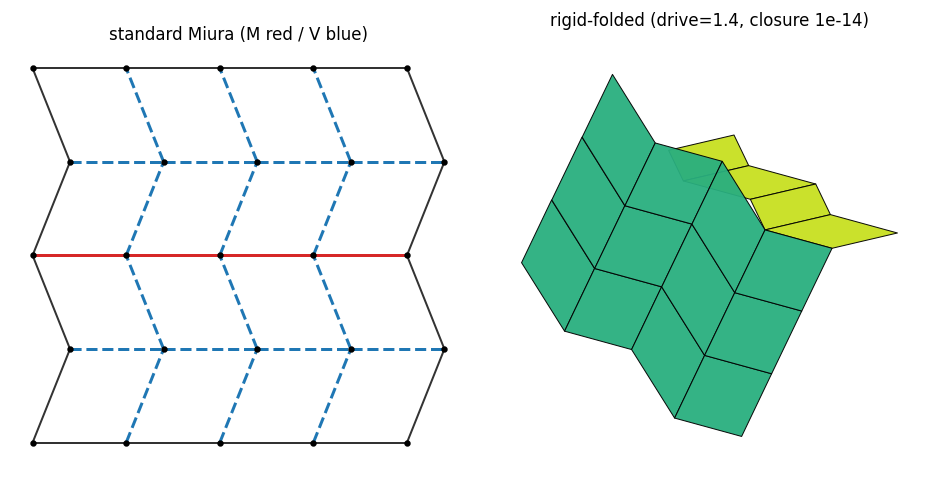
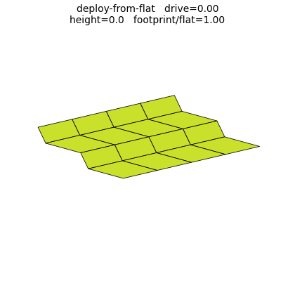
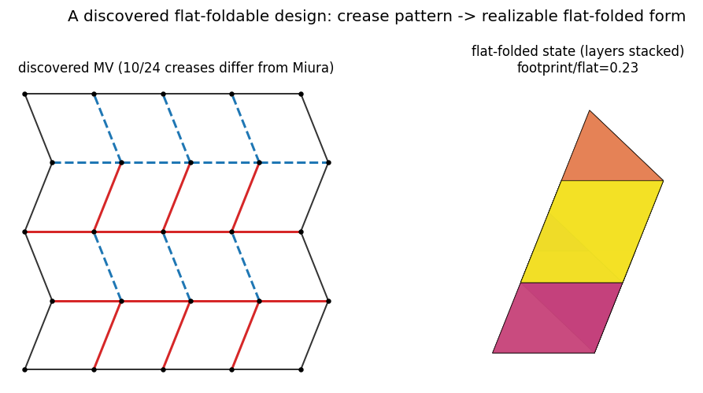

origami-diffuse: Feasibility-Aware Generative Co-Design of Origami Soft Robots
A diffusion model that generates novel origami crease patterns while
staying on the vanishingly small manifold of patterns that actually fold
flat, in the lineage of DiffuseBot (Wang et al., NeurIPS 2023).
Generative co-design methods like DiffuseBot let a diffusion model search a
design space jointly with a differentiable behavior objective. Origami
fold-space makes an unusually hard testbed for that idea: almost every
random crease pattern doesn't fold flat at all, so feasibility is a
measure-zero region of the design space, and for discrete
mountain/valley assignments, deciding global foldability is
NP-hard. A generator that only optimizes for behavior will
walk straight off the feasible manifold. This project asks: can a
learned feasibility surrogate guide a diffusion model onto that
manifold, while a differentiable behavior certificate simultaneously
co-optimizes performance?

The Miura-ori family used as the generation testbed: mountain (red) / valley (blue) crease pattern.
Two certificates, not one
The method rests on pairing two learned/exact signals rather than one:
Foldability certificate: a learned surrogate trained against an exact oracle (Kawasaki/closure conditions plus a global SAT solve for MV-assignment validity) that provides smooth guidance gradients where no analytic gradient exists.
Behavior certificate: a differentiable 3D rigid-fold simulator (validated to machine precision against closed-form and finite-difference checks) that scores task performance, e.g. a target deployed height.
Results, stage by stage
M0 (learned feasibility, continuous & discrete).
On continuous geometry, a calibrated surrogate (R²=0.997, AUROC=0.998)
produces guidance gradients that match the exact analytic Kawasaki
baseline, and guided diffusion lifts the exact-oracle feasible rate from
0.203 to 0.693. On discrete MV-assignment (the genuinely NP-hard
substrate, where 93.8% of locally-valid patterns are globally
non-foldable), a learned global surrogate (AUROC=1.000, AP=0.990 on a
unique-disjoint split) still guides generation from 0% to 30% foldable.
M1 (scaling via a size-agnostic GNN). A crease-graph GNN
trained only on 3×3/4×4 patterns predicts foldability on unseen
5×5/6×6 patterns at AUROC 0.999-1.000 (Maekawa-only baseline: chance).
Self-recurrence ("time-travel") guidance pushes generation at an unseen
5×5 size to 17% foldable, 2.6× the basic-sampler peak. The
certificate transfers across size within a folding regime, but
zero-shot transfer across regimes (e.g. sheared Miura to orthogonal
grid) fails at near-chance AUROC; joint training is needed there.
M2 (behavior + co-design). Behavior-only optimization
(no feasibility term) reaches 0% foldable designs, the DiffuseBot-style
failure mode this project set out to avoid. Adding the learned
feasibility term restores 100% foldability at the same behavior target,
and scheduling feasibility early / performance late Pareto-beats
optimizing both simultaneously.
M3 (deploy-from-flat). Co-design discovers an exactly
foldable design that is a flat sheet at rest and a tall, 40%-compacted
3D structure at full actuation: folding doesn't just decorate the
design, it enables the deploy-from-flat capability that a
feasibility-blind search never finds.

A co-designed pattern deploying from a flat sheet into a tall, compacted 3D structure.

The full deploy-from-flat trajectory, traced across increasing actuation.
Every learning claim in this project is checked against an exact oracle:
Kawasaki/closure conditions and a sound-and-complete global SAT solver for
MV-assignment foldability, so the reported foldable rates aren't just
surrogate scores, they're ground truth.